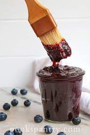

Blueberry BBQ Sauce

Ingredients
- 4 C. Blueberries
- 1/2 C. Apple Cider Vinegar
- 1/4 C. Brown Sugar
- 1 T. Grated Ginger
- 1 T. Molasses
- 1 t. Salt
- 1 t. Chili Powder
- 1/4 t. Cinnamon
- 1/4 t. Allspice
Directions
- Combin all ingredients in a sauce pan on the stove-top.
- Heat on medium until bubbling & the blueberries have broken down. If more liquid is needed, add orange juice or water.
- Strain or processess the sauce while warm to get a smoother consistancy. Leave "as is" to cool for a more rustic texture.